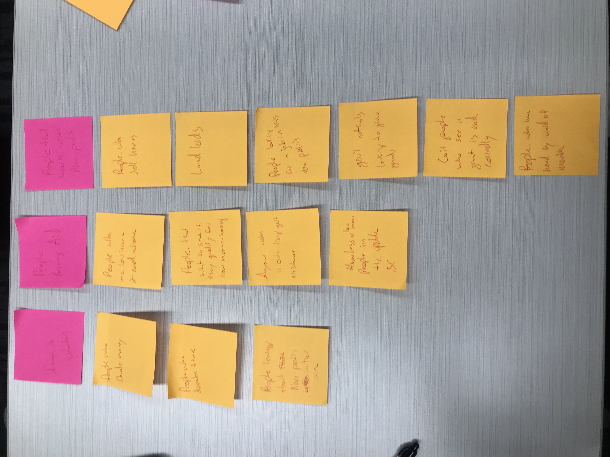
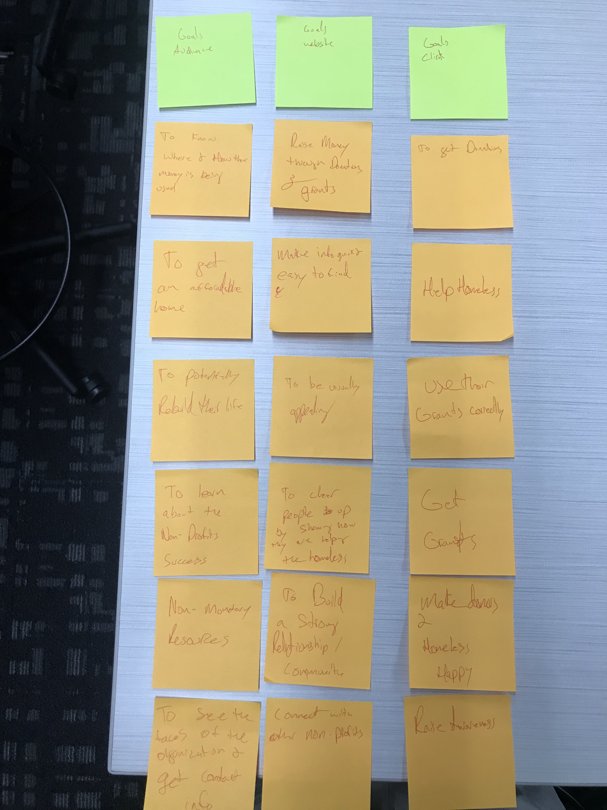

Audience & Goals
Specific Goals
Specific Goals
| User | Goals | Content/Action |
|---|---|---|
| Donors | To know that their money is being used for the greater good. To know exactly who they are helping. To feel that they helped the business by donating. | Give an annual report to show the success of the nonprofit.Show images and tell stories of the families effected. Make sure you dont go $355,259 dollars in the hole. |
| Beneficiaries | To find if they are eligible for affordable housing. To learn how they will be financially responsible for the house. What housing options there are and if conflicts with them. | Have a designated section telling who is elligible. That section can also discuss how they will be financially responsible. Have a map that shows housing regions. |
| Volunteers | To find events they can help with. | Have a calendar showing what days they can help and contact information for the event planner. |
| Nonprofit | To receive grants. To receive donations of time and money. To help the homeless and low income by providing affordable housing. /td> | To follow guidelines to ensure that the grant is used correctly, maybe even showing this on the annual report. To show to donors that this nonprofit is worth their time and money. Having the number to show that you are doing everything correctly. |
Overarching Goals
| Client | Audience | Website |
|---|---|---|
| To get donors. To help the homeless and low income. Use their grants correctly. To get grants. Make donors and beneficiaries happy. Raise awareness. | To know how and where the money is being used. To get an affordable home. To rebuild their life. To learn about the nonprofits success. Non monetary resources. To see the faces of the organization and get contact information. | Raise money through donors and grants. Make information easy and quick to find. To be visually appealing. To show success stories. To build a strong community or relationship. To connect with other non profits. |
Screenshots from War Room

